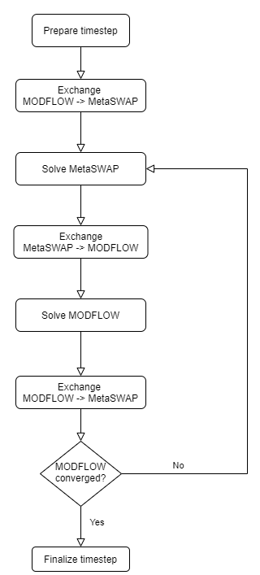

Technical Reference
This document describes how MetaSWAP and MODFLOW6 are coupled. It is intended for groundwater modellers, who need to know which variables are exchanged between computational kernels and at which moment. For details of the inner workings of the code, we refer to the docstrings in the code.
Below is a flowchart showing the order in which one timestep is iteratively solved and when data is exchanged between MetaSWAP and MODFLOW6.

Requirements
- Currently only confined flow is supported, similar to a previous implementation of MetaSWAP-MODFLOW coupling.
- Both the specific storage and the storage coefficient option of MODFLOW 6 are supported.
- A recharge package (RCH) is required in the MODFLOW 6 model to facilitate the recharge flux of MetaSWAP.
- A well package (WEL) is required in the MODFLOW 6 to facilitate the extraction of groundwater for MetaSWAP’s sprinkling.
- The sum of svat areas should not exceed the area of the MODFLOW cell they are coupled to.
- Currently only multiple svats can be coupled to one MODFLOW cell, and not the other way around. It is not possible to couple multiple MODFLOW cells to one svat.
Data exchanges
MODFLOW 6 to MetaSWAP
Heads
MODFLOW sets the heads in MetaSWAP, to be specific the hgwmodf variable. When multiple svats are coupled to one MODFLOW cell, each svat is given MODFLOW’s head. When multiple MODFLOW cells are coupled to one svat, the arithmetic average is taken.
MetaSWAP to MODFLOW
MetaSWAP provides a recharge, sets the storage, and extracts groundwater from deeper layers for sprinkling (if switched on).
Storage
q
Recharge
Recharge is provided by MetaSWAP to MODFLOW. MetaSWAP internally stores volumes that should be provided to MODFLOW, so these are converted to rates by dividing by the timestep length. When multiple svats are coupled to one MODFLOW cell, recharge rates are summed.
Sprinkling
Groundwater extraction rates to set sprinkling are computed by MetaSWAP based on irrigation requirements. MetaSWAP internally stores volumes that should be provided to MODFLOW, so these are converted to rates by dividing by the timestep length. When multiple svats are coupled to one MODFLOW cell, extraction rates are summed.
Files
The following files are required to couple the two model codes. These files provide the mappings from MODFLOW indices to the MetaSWAP svats.
MetaSWAP requires the file:
mod2svat.inp
MODFLOW6 requires the files:
[filename].rch[filename].wel(optional)
The coupler itself requires the following files:
nodenr2svat.dxcrchindex2svat.dxcwellindex2svat.dxc(optional)
Below we will describe the format for each file.
MetaSWAP
mod2svat.inp
The file format for this file is also described in the SIMGRO IO manual. It is as follows:
node_nr svat ly
...Were node_nr is the MODFLOW6 node number (to be specific: the user node number), which replaces the MODFLOW 2005 CellID. svat is the MetaSWAP svat number and ly is the MODFLOW layer number. Note that the format for this file should be fixed to
f"{nodenr:10d} {svat:10d}{ly:2d}"where the number behind the colon indicated the number of characters, padded with whitespace. Note the two whitespaces between nodenr and svat.
MODFLOW 6
[filename].rch
A dummy recharge file, of which the fluxes will be overridden. The location of the recharge cells is used to assign an recharge index by Modflow6. The file format of the .rch file is described here. To specify an uncoupled recharge as well, a second RCH package should be defined. How to define a second stress package is explained here. Please note that in the model name file the package name should correspond to the package name specified in the configuration file.
[filename].wel
A dummy well file, of which the fluxes will be overridden. The location of the wells is used to assign a well index by Modflow6. The file format of the .wel file is described here. To specify uncoupled extractions/injections as well, a second WEL package should be defined. How to define a second stress package is explained here. Please note that the package name in the model name file should correspond to the package name specified in the configuration file.
Coupler
nodenr2svat.dxc
This file takes care of mapping the MODFLOW node numbers to the MetaSWAP svats, which is required for coupling the heads and storages of both kernels, it thus excludes nodes connected where wells are for sprinkling. The file format is as follows:
node_nr svat ly
...Where node_nr is the MODFLOW6 node number (to be specific: the user node number), which replaces the MODFLOW 2005 CellID. svat is the MetaSWAP svat number and ly is the Modflow layer number.
rchindex2svat.dxc
This file takes care of mapping the recharge cells to the MetaSWAP svats. The file format is as follows:
rch_index svat ly
...Where rch_index is the MODFLOW6 RCH index number, which equals the row number of the data specified under period in the .rch file. svat is the MetaSWAP svat number and ly is the MODFLOW layer number.
wellindex2svat.dxc
This file takes care of mapping MODFLOW wells to the MetaSWAP svats for sprinkling. The file format is as follows:
well_index svat ly
...Where well_index is the MODFLOW6 WEL index number, which equals the row number of the data specified under period in the .wel file. svat is the MetaSWAP svat number and ly is the MODFLOW layer number.
How to define a second stress package for MODFLOW6
A second stress package (in our case named WELL2) can be defined in the flow model’s .nam file (GWF_1.nam).
begin options
end options
begin packages
dis6 GWF_1/dis.dis
chd6 GWF_1/chd.chd
npf6 GWF_1/npf.npf
ic6 GWF_1/ic.ic
wel6 GWF_1/wel.wel WELLS_MSW
wel6 GWF_1/wel2.wel WELL2
sto6 GWF_1/sto.sto
oc6 GWF_1/oc.oc
end packagesThe argument values WELLS_MSW and WELL2, specify the package names to be printed in the water budget .lst file. In the configuration file, you have to specify which package name is used for the coupling.